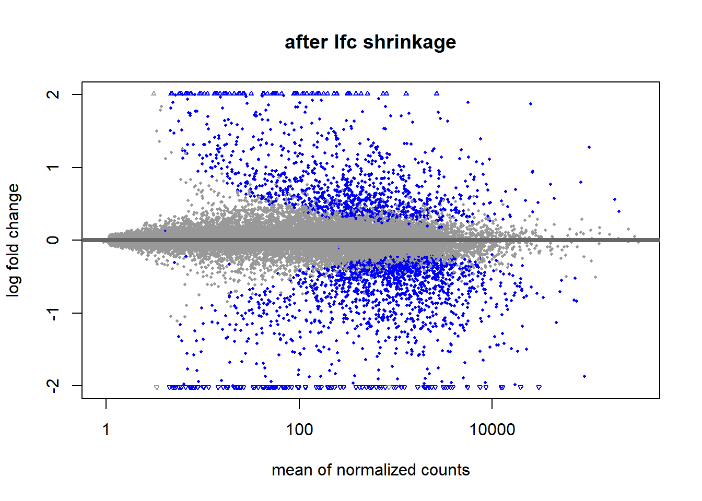

DESeq2 analysis: Method and Background
Author: Thomas Baardemans, Supervisor: Marc Teunis (Hogeschool Utrecht)
20-Oct-2020
if (!requireNamespace("BiocManager", quietly = TRUE))
install.packages("BiocManager")
BiocManager::install(version = "3.11")#BiocManager::install("airway")
#BiocManager::install("DESeq2")
#BiocManager::install("biomaRt")
#BiocManager::install("apeglm")library(tidyverse)
library(DESeq2)
library(dplyr)
library(SummarizedExperiment)
library(airway)
library(here)
library(biomaRt)
library(gridExtra)
library(vcd)
library(ade4)
library(factoextra)1 Introduction
RNA sequencing is currently the most widely used technique for quantifying gene expression (transcriptome) in tissues, cell cultures or even individual cells. Interpretation of the resulting data is not as straightforward as it might seem due to biases introduced by the methods used and biological variety between samples. In order to correctly analyse a transcriptome dataset it is important to understand methods used to obtain and analyze the data. This lesson aims to give the student a broad overview of a typical RNA-seq experiment. Furthermore it will also give an insight into the statistical tests used by the DESeq2 package to test for differentially expressed genes. Throughout the lesson special attention is given to biases that may be introduced. The lesson is split up in three chapters. The first chapter describes the setup of the experiment and what biases it may introduce and will also discuss the mapping of the reads to the genome. The second chapter discusses the inner workings of DESeq2 function and third chapter will focus on (visualizing) the results.
2 Next Generations Sequencing and mapping reads
Before we can begin to understand any of the statistical tests used by DESeq2 we need to have a rough understanding of the experiment that produced the data and steps involved.
The technique uses reverse transcriptase to convert mRNA molecules to cDNA molecules. The resulting sequences(reads) of cDNA are mapped onto the genome. This produces a ‘counts table’ with the exact amount of mRNA molecules that were detected in the sample. This step of mapping the reads onto the genome is usually done already when a dataset is submitted to the GEO website. This process can be repeated byb downloading the .SRA files using the “SRA Run Selector” found on the GEO page.
This step is not part of this course and we will start with the raw counts of each gene.
2.1 Experimental design
Cell/Bacteria cultures can be harvested or biopts can be taken from animals or patients. The minimal design has at least 1 experimental variable and 3 replications (samples) per group. Careful consideration of replication number is advised though since a study using 42 replications per group has shown that using just 3 replications only identifies 20-40% of differentially expressed genes depending on the tool used (Schurch, Nicholas J et al. 2016). To identify >85% of genes regardless of fold change 20 replications are required (fold change is a quantative measure of difference. See chapter …). They conclude at least 6-12 replications are recommended. Because scientists often want to maximize the amount of experimental conditions most of the datasets contain 3 replications.
2.2 Library preparation.
After the RNA is extracted from the sample the ribosomal RNA (rRNA) needs to be removed. Over 90% of the RNA found in a cell is rRNA and only 1-2 % of the RNA is the mRNA we are interested in in a standard RNA-seq experiment (Conesa et al. 2016). mRNA selection can be achieved by selecting for the poly(A) tail found on eukaryotic mRNA’s or by depleting rRNA. poly(A) selection yields better results but is not always possible in biopts and is never possible in bacteria because they do not have poly(A) tails in their mRNA’s. poly(A) selection also filters out other non coding DNA such as microRNAs (miRNAs) because they do not contain a poly A tail either. After selection the mRNA’s are fragmented and reverse transcripted to synthesize the cDNA library. The fragmentation is neccesary because most Next Generation Sequencing machines can only sequence molecules up to 300 basepairs.
Figure x: cDNA library synthesis. adapted from: Overview of RNA seq tech from illumina website
2.3 Next Generation Sequencing (NGS)
After cDNA synthesis the fragments are ligated to adapters to attach the molecules to the nanowells in a flowcell. NGS uses 1 strand of the cDNA to synthesize the complementing strand using fluorescently labelled nucleotides. After each cycle a new nucleotide attached and the flowcell is imaged.
Concept 1: Read depth (also know as sequencing depth) is a parameter with a different meaning depending on the experiment conducted. If a whole genome is sequenced the read depth is the number of times each nucleotide has been sequenced to call the base. In a typical whole genome experiment an average read depth of 30 to 50x is recommended by illumina (https://emea.illumina.com/science/technology/next-generation-sequencing/plan-experiments/coverage.html). When using RNA-seq the read depth takes on a different meaning: It is the ammount of reads that is “sampled” from the whole population of cDNA molecules in the library (tarazona et al 2011). This usually runs in the millions depending on the goal of the experiment and can be > 100 million reads per sample. More read depth results in a more accurate quantification of genes that are expressed in low amounts.
Further reading: For a more in-depth understanding of the NGS method you can watch this video: https://www.ibiology.org/techniques/next-generation-sequencing/#part-1 (short read NGS starts at 06:46 and ends at 20:52).
2.4 Mapping reads
Now that the sequences of the reads are known they need to be mapped to a reference genome and counted (each cDNA fragment that is sequenced is usually reffered to as a “read” or a “count”). Usually the raw sequences of the reads are submitted to the Short Read Archive (SRA) so other researchers can reproduce this step and every step hereafter. Mapping the reads to the genome proves to be harder than might be expected at first. One of the challenges is presented by the different isoforms of genes produced by alternative splicing. Over 90% of human genes are alternatively spliced producing a big amount of possible isoforms (stark_2019). This leads to reads being mapped ambiguously (fitting on more than one isoform) making it hard to count which read belongs to which isoform.
Figure x: Ambiguous reads present a problem in assigning a read to specific isoform. Even splice junction spanning reads can be ambiguous. Using the unambiguous reads an estimate can be made about isoform prevalence. Adapted from stark 2019
Paralogues reads prove to be an even harder problem to solve. Paralogues genes are genes that share a (relatively recent) common ancestor gene. This can lead to large portions of the sequence being completely identical. If a read falls within this zone it is impossible to know whether it belongs to gene x or y. Simply discarding these “multireads” can result in an underrepresentation of counts from genes that have lots of paralogues like the ubiquitin family for example. Some software(ERANGE) distributes these multireads in proportion to the number of unique and splice reads at similar loci (mortazavi 2008, laatste zin is bijna helemaal ge-copy-pasted van bron –> misschien nog even omschrijven).
Further reading: To understand the algorithm used to map reads to the genome while making efficient use of computing resources (Burrows-Wheeler transform) watch this lecture by MIT professor David Gifford: https://www.youtube.com/watch?v=P3ORBMon8aw
After assigning each read to a gene all the readcounts are stored in an expression matrix file (Also referred to as counts data or assay data). This expression matrix is sometimes also included in the expressionset uploaded to GEO but more often than not it is a seperate file included in the supplementary files. In other lessons of the course you will lean how to organize this expressionset into a neat dataset ready to be analyzed. For this lesson we will use a dataset called “airway” that can be downloaded/installed using bioconductor.
# Uncomment and run the next line to install using bioconductor:
BiocManager::install("airway")
#load the package into R
library(airway)#load the dataset:
data(airway)
#There should now be an "airway" object loaded into your global environment. The airway dataset has already been cleaned up and formed into a SummarizedExperiment ready for a differential expression analysis. Before we start analyzing it is important to first explore the dataset to see what we are actually working with.
Exercise 1: Inspect the airway dataset using the metadata(), assay() and colData() functions from the SummarizedExperiment package. Use these functions to answer the following questions:
- What kind of cells have been used in the experiment?
- How does the assaydata relate to the coldata?
- What are the experimental conditions?
open the codeblock to see the answers.
# Answer 1: airway smooth muscle cells (use metadata() function to see title and link to pubmed).
# Answer 2: The columnnames of the assaydata are linked to rownames of the colData. So each row in the colData contains information about a sample (column in assaydata).
# Answer 3: Dex and cell. Read the pubmed abstract to get more info about dex. Because this dataset is only a subset of a bigger dataset there is also a variable called albut. All the samples untreated so its not an experimental group in our subset of the data. 3 Differential gene expression analysis
Now we have our dataset loaded we can start to look for differences in expression between samples. However before we can run statistical test on the data there are a few steps to go through. These steps are included in the DESeq2 function. DESeq2 is basically a “wrapper” function that executes a number of other functions in the “background”. The purpose of these functions is roughly the following:
- Estimation of size factor
- Estimation of dispersion
- Testing
In this chapter we will go through each step in but before we get there we will dive into the binomial and poisson distributions distributions first.
3.1 Binomial distribution
The simplest example of a binomial distribution is the coin toss. binomial distribution works with boolean values: true/false, 0 or 1, fail or succes. Each “cointoss” is called a Bernoulli trial.
exercise: Use rbinom to simulate 100 double rolls of a die. Where throwing 6 is considered “succes” and everything below a “fail”. The results should show a “1” when a single 6 has been rolled and “2” when both die rolled a 6.
#Answer:
rbinom(100, 2, prob = 1/6)
## [1] 0 0 0 1 1 0 0 0 0 0 0 0 2 0 1 0 0 0 0 0 0 0 2 0 0 0 0 1 1 0 0 1 0 0 1 1 1
## [38] 0 1 0 1 0 0 0 0 1 0 1 0 0 0 0 1 0 0 0 0 1 0 0 0 0 1 1 0 0 1 0 0 0 0 0 0 0
## [75] 0 1 2 0 0 0 0 1 1 0 0 0 0 0 0 0 0 0 0 0 1 0 1 1 1 0To get complete distribution of probabilities we use dbinom. note: use rbinom to generate data (r stands for random in this case). use dbinom to generate a probability (d stands for distribution?). This also works with other statistical distributions as we will see later on in the lesson.
#probability that 6 is thrown twice.
dbinom(2, 2, prob = 1/6)
## [1] 0.02777778
#to get the probabilities for all possible outcomes we use the colon. the chance of 3 succes if ofcourse zero because we only throw with 2 dice.
dbinom(0:3, 2, prob = 1/6)
## [1] 0.69444444 0.27777778 0.02777778 0.00000000
barplot(dbinom(0:3, 2, prob = 1/6), names.arg = 0:3)3.2 Poisson distribution
When the probability of success p is small and the number of trials n large, the binomial distribution B(n,p) can be faithfully approximated by a simpler distribution, the Poisson distribution with rate parameter λ=np. (Stuk tussen haakjes is copy pasta uit mod stat mod bio. Nog even omschrijven. Maar is wel mooi omschreven.)

figure1: A barplot showing a poisson distribution. k = number of occurences, P(X=k) = probability of succes given lambda
If we look at figure 1 there is an event with a \(\lambda\) of 6. \(\lambda\) might represent the number of letters someone has received on average each day for the last month. If we were to look at the mail that arrived on a given day there is a chance of 0.04 (P) of us counting 2 (k) pieces of mail.
A good example of a Poisson distribution is the mutation rate of DNA. If we want to know the amount of mutations we can we are likely to find in 1 kb of DNA we start with determining the \(\lambda\) (event rate / poisson mean). In this hypothetical example we examine 1 mb and find 307 mutations. So \(\lambda\) = 312/1000 = 0.307. To calculate the chance we find 3 mutation in 1 kb of DNA we can use the following poisson formula
So in this formula we input \(\lambda\) = 0.307, \(\kappa\) = 3. Note that the ! represents a factorial: n! = n * (n-1) * (n-2) … So our k! = 321 = 6. In R we can use this formula as follows:
0.312^3 * exp(-0.307) / factorial(3)
## [1] 0.003723781
# However there is a function in R that will work equally well:
dpois(x = 3, lambda = 0.307)
## [1] 0.003547607so there is a probability 0.0035 that a given kb contains 3 mutations. So we expect to find about 4 sections of DNA to contain 3 mutations. To get P(X=k) for all the other k values we can change the code slightly:
mutationprobability <- dpois(x = 0:4, lambda = 0.307)
mutationprobability
## [1] 0.7356506009 0.2258447345 0.0346671667 0.0035476067 0.0002722788
# To get the probability that there are 5 or more mutations in a kb we can simply subtract the sum of probabilities 0:4 from the number 1. We will need this later to perform a chi-squared test.
mutationprobability <- c(mutationprobability, 1-sum(mutationprobability))and we can also plot these values to get a visual of the distribution
barplot(dpois(x = 0:4, lambda = 0.307), names.arg = 0:4, col = "#2780e3", xlab = "k", ylab = "P(X=k)")
Now after fragmenting the DNA in kb pieces and sequencing them we get the following results:
mutationresults <- c(740, 218, 37, 5, 0, 0)
options(digits = 3)
knitr::kable(data.frame("mutations per kb" = c("0", "1", "2", "3", "4", "5+"),
"expected number of fragments" = mutationprobability *1000,
"observed number of fragments" = mutationresults),
align = "c", row.names = FALSE,
col.names = c("mutations per kb", "expected number of fragments", "observed number of fragments"),
caption = "Results")| mutations per kb | expected number of fragments | observed number of fragments |
|---|---|---|
| 0 | 735.651 | 740 |
| 1 | 225.845 | 218 |
| 2 | 34.667 | 37 |
| 3 | 3.548 | 5 |
| 4 | 0.272 | 0 |
| 5+ | 0.018 | 0 |
The results look fairly close to the expected results if the mutationrate of DNA follows a poisson distribution. We can test this using a chi-squared test. The chi-squared test determines whether there is a statistically significant difference between expected frequencies and observed frequencies.
H0: Observed frequencies follow expected frequencies, the mutationrate of DNA follows a poisson distrubution. H1: Observed frequencies do not follow expected frequencies, the mutationrate of DNA does not follow a poisson distribution
chisq.test(x = mutationresults, p = mutationprobability)
##
## Chi-squared test for given probabilities
##
## data: mutationresults
## X-squared = 1.3396864, df = 5, p-value = 0.9307955the p-value > 0.05 so we accept H0.
3.3 Exercise: V1 flying bomb. Guided weapon or does something smell a bit fishy?
Figure 1: Illustration of a V1 flying bomb. The V stands for ‘vergeltungswaffen’ (vengeance weapon) and was used to terrorize London civilians in the second world war.
Poisson distributions occur in all kinds of unexpected places. During World War 2 the German army developed a flying bomb (V1 and later V2) to terrorize civilians in London. The impact sites of these bombs tended to be grouped in clusters. This made the English wonder whether these clusters were the result of some aiming mechanism on the bombs or if it was just chance. Statistician R. D. Clarke set out to tackle this problem (clarke1946). He selected a 144 km2area on the map of south London and divided it in 576 squares of 0,25 km2. Counting the recorded impacts over the last x months Clarke determined there had been 537 impacts of flying bombs in the selected area.
Question 1: Use the information given above to calculate the probabilities that a given square had 0,1,2,3,4 or 5+ impacts if the impacts were distributed according Poisson probabillity. Click the “code” button to reveal the answer.
#First we calculate the chance that a given square got bombed 0,1,2,3 or 4 times.
zero_to_four <- dpois(x = 0:4, lambda = 537/576)
#The chance a square gets impacted 5 or more times is 1 minus the sum of chances it gets hit 0 to 4 times.
five_plus <- 1-sum(zero_to_four)
#Concatenating the chances.
poissonexpectation <- c(zero_to_four, five_plus)
#Show the complete vector of probabilities (from 0 to 5+):
poissonexpectation
## [1] 0.393650560040 0.366997136704 0.171074186120 0.053163679367 0.012391013811
## [6] 0.002723423957Next Clarke counted the number of squares that contained 0,1,2,3,4 and 5+ bomb impacts. Clarke hypothesized that if the V1 flying bombs contained an aiming mechanism there would be a disproportionate amount of squares containing either relatively high number of impacts or none at all.
options(digits = 3)
knitr::kable(data.frame("impacts per square" = c("0", "1", "2", "3", "4", "5+"),
"expected amount of squares" = poissonexpectation*576,
"actual amount of squares" = c(229, 211, 93, 35, 7, 1)),
align = "c", row.names = FALSE,
col.names = c("impacts per square", "expected amount of squares", "actual amount of squares"),
caption = "R.D. Clarke's results")| impacts per square | expected amount of squares | actual amount of squares |
|---|---|---|
| 0 | 226.74 | 229 |
| 1 | 211.39 | 211 |
| 2 | 98.54 | 93 |
| 3 | 30.62 | 35 |
| 4 | 7.14 | 7 |
| 5+ | 1.57 | 1 |
As you can see from just looking at the results the poisson distribution predicted the actual distribution quite effectively. Te verify that the bomb impacts follow a poisson distribution we can perform a chi-squared test using the chisq.test function in R.
bombdata <- c(229, 211, 93, 35, 7, 1)
# chi square testing
chisq.test(x = bombdata, p = poissonexpectation)
##
## Chi-squared test for given probabilities
##
## data: bombdata
## X-squared = 1.1691547, df = 5, p-value = 0.9478021This result is in line with what we know about the V1 today: It could only be aimed in the general direction of London but not guided to a more specific target like a building or a block of buildings.
3.4 Maximum likelihood estimation
So far we have used a top-down approach. We had a big dataset with a known lambda and we compared it to the distribution with the same lambda. Sometimes there are not enough datapoints to simply take the mean and use this as a lambda.
Exercise x: Use rpois to generate 3 numbers with a lambda of your choosing?. Calculate the mean of the 3 numbers. Does it approach the chosen lambda used to generate the dataset? Try again but now generate 1000 numbers
#You can run this code multiple times. This way the seed will progress.
mean(rpois(3, 100))
## [1] 100.6666667
mean(rpois(1000, 100))
## [1] 100.309When working with RNA-seq datasets we often only have 3 replicates. So when trying to estimate the lambda of a gene from 3 datapoints taking the mean will not be very accurate. @Marc: Hier gaat het even de fout in. Ik wil dus de likelihood estimation gaan uitleggen zoals hij omschreven staat in hoofdstuk 2.3 van modern statistics for modern biology. Daar staat een hele uitleg met formules en dingen om de most likely lambda in te schatten. Ik dacht dus eigenlijk dat dat dan accurater zou moeten zijn dan gewoon het gemiddelde te pakken wanneer je maar een paar datapunten hebt. Maar nu kom ik erachter dat de max likelihood iedere keer op exact hetzelfde getal uitkomt als het gemiddelde van de observaties…. zie onderstaande code…
# To get a sample dataset I used rpois(3, 100) to generate 3 numbers. You can generate another sample set and follow along with that if you like
#$observations <- c(103, 83, 91)
observations <- rpois(3, 100)
mean(observations)
## [1] 86.33333333
gf = goodfit(observations, "poisson", method = "ML")
gf$par
## $lambda
## [1] 86.33333333
# mmm maximum likelihood komt op hetzelfde uit als de mean. Of misschien doe ik iets fout. 3.5 Estimation of size factor: “Normalizing” the data
When comparing the readcounts of a gene between 2 experimental conditions we need to make sure that the difference is only influenced by the treatment and not by any other biases. Lets take a look at the “airway” dataset. This dataset contains the summarized experiment from an experiment that treated airway smooth muscle cells with dexamethasone (glucocorticosteroid).
#Lets take a look at some of the assaydata
head(assay(airway))
## SRR1039508 SRR1039509 SRR1039512 SRR1039513 SRR1039516
## ENSG00000000003 679 448 873 408 1138
## ENSG00000000005 0 0 0 0 0
## ENSG00000000419 467 515 621 365 587
## ENSG00000000457 260 211 263 164 245
## ENSG00000000460 60 55 40 35 78
## ENSG00000000938 0 0 2 0 1
## SRR1039517 SRR1039520 SRR1039521
## ENSG00000000003 1047 770 572
## ENSG00000000005 0 0 0
## ENSG00000000419 799 417 508
## ENSG00000000457 331 233 229
## ENSG00000000460 63 76 60
## ENSG00000000938 0 0 0
#some of the samples (columns in assaydata) are treated and some are not. To figure out which is which we take a look at the coldata
colData(airway)
## DataFrame with 8 rows and 9 columns
## SampleName cell dex albut Run avgLength
## <factor> <factor> <factor> <factor> <factor> <integer>
## SRR1039508 GSM1275862 N61311 untrt untrt SRR1039508 126
## SRR1039509 GSM1275863 N61311 trt untrt SRR1039509 126
## SRR1039512 GSM1275866 N052611 untrt untrt SRR1039512 126
## SRR1039513 GSM1275867 N052611 trt untrt SRR1039513 87
## SRR1039516 GSM1275870 N080611 untrt untrt SRR1039516 120
## SRR1039517 GSM1275871 N080611 trt untrt SRR1039517 126
## SRR1039520 GSM1275874 N061011 untrt untrt SRR1039520 101
## SRR1039521 GSM1275875 N061011 trt untrt SRR1039521 98
## Experiment Sample BioSample
## <factor> <factor> <factor>
## SRR1039508 SRX384345 SRS508568 SAMN02422669
## SRR1039509 SRX384346 SRS508567 SAMN02422675
## SRR1039512 SRX384349 SRS508571 SAMN02422678
## SRR1039513 SRX384350 SRS508572 SAMN02422670
## SRR1039516 SRX384353 SRS508575 SAMN02422682
## SRR1039517 SRX384354 SRS508576 SAMN02422673
## SRR1039520 SRX384357 SRS508579 SAMN02422683
## SRR1039521 SRX384358 SRS508580 SAMN02422677Now we know what is what we would like to know if both conditions have an equal amount of reads in them.
#total reads per treatment.
sum(assay(airway[,airway$dex == "trt"]))
## [1] 85955244
sum(assay(airway[,airway$dex == "untrt"]))
## [1] 89561179The difference is not huge. But its still 3.6 million reads less in the treated group. Could it be that the treated group has some genes downregulated? Or is something else going on? The difference becomes more apparent if we take a look at the individual samples (fig x). The total amount of reads ranges from 15 million to over 30 million within the treated condition! This difference can be due to multiple reasons: Conditions in the well might have been slightly different leading to quicker growth or the samples might nog have an equal sequencing depth.
#create a dataframe with the total reads of all samples and their treatment.
reads_per_sample <- data.frame(reads = c(sum(assay(airway[,1])),
sum(assay(airway[,2])),
sum(assay(airway[,3])),
sum(assay(airway[,4])),
sum(assay(airway[,5])),
sum(assay(airway[,6])),
sum(assay(airway[,7])),
sum(assay(airway[,8]))),
dextreatment = colData(airway)$dex
) ggplot(data = reads_per_sample, mapping = aes(x = 1:8, y = reads, fill = dextreatment)) +
geom_col()
In order to adjust for this effect we need to scale the reads so the total amount of reads will become (more) equal between samples. To do this we calculate a size factor. We could take the total reads of sample 2 and divide by the total reads of sample 1. 320/260 = 1.231. We could use this size factor to correct the reads of each genes so that the total number of reads in each sample will become equal. This method is flawed as we can see in figure x. The blue line represents the size factor we just calculated. Using this size factor implies gene A,B,D and E are upregulated and gene C is downregulated. However this is not likely the case. It is more likely that A,B,D and E are present in equal amounts in both samples and gene C is downregulated in sample 2. The higher countnumber of A,B,D and E is a result of the difference in read depth. If we plot a regression line through these points (red line) we get a more exact size factor that estimates only the difference in read depth and not the difference in expression of genes (If lots of genes are upregulated it is expected to find more mRNA’s in a cell overall). In this hypothetical dataset the sizefactor calculated by the red line is 1.5. This last method is what DESeq2 uses to estimate the size factor.

Figure x: estimation of size factor. Dots represent genes. Blue and red lines represent two ways of size factor esimation. source: mod stat mod bio chapter 8 fig 8.1.
As we discussed earlier DESeq2 is a wrapper function. The functions within it can often be called separately like the size-factor-estimation function.
#estimate the sizefactors and return them
estim <- DESeq2::estimateSizeFactorsForMatrix(assay(airway))
#mutate the size factor into the dataframe
reads_per_sample <- mutate(reads_per_sample,
sizefactor = estim)
#calculate the adjusted reads using the sizefactor.
reads_per_sample <- mutate(reads_per_sample,
reads_adjust = reads_per_sample$reads/reads_per_sample$sizefactor)ggplot(data = reads_per_sample, mapping = aes(x = 1:8, y = reads_adjust, fill = dextreatment)) +
geom_col()
As you can see the range of total reads has drastically decreased. All samples now have between 20 and about 22,5 million total reads.
Note: if you look at the help page of estimateSizeFactorsForMatrix you might notice the function also accepts an optional argument called controlGenes. The control genes can come in 2 forms:
- Spike-in genes: These are artificial mRNA sequences that can be added in a known quantity to the sample.
- Housekeeping genes: These genes are essential for basic maintenance and function of the cell. Some of these are expressed at relatively constant rates.
3.6 Estimating dispersion (second step of DESeq2) and negative binomial distribution
At first it was believed that the expression of a gene followed a poisson distribution. It turned out however that this was only the case when evaluating samples that were technical replicates.
The main problem with the poisson distribution is the lambda parameter because in this distribtion: lambda = mean = variance. To accurately model the data we need a distribution that uses seperate parameters for mean and variance (dispersion). This is where the negative binomial distribution comes in. It accepts these parameters and is used by DEseq to model the data. Before we can use this distribution however we do need to find out what these 2 parameters are. The mean is simple enough but what about the dispersion parameter?
Estimating dispersion of a gene is hard/impossible if you only have 3 samples per experiment group because n is too small. You would need quite alot of samples to accurately predict the dispersion and quite often you are working with data gathered by someone else so this is simply not an option. As a solution DESeq2 assumes genes of similar average expression have a similar dispersion (Love et al 2014). DEseq2 calculates the dispersion of individual genes and then calculates an average dispersion of genes that are expressed in simular quantities. It then “shrinks” the individual dispersions towards the average dispersion. To get a better understanding of this shrinking it is useful to plot the dispersion in your dataset (figure x).
![Figure x: Plot of dispersion estimates of airway dataset. The black dots represent the dispersion calculated for a given gene (gene-wise estimate). the average dispersion of genes with simular expression (mean of counts) is calculated. A red line is fitted trough the average dispersions and the genes are shrunken toward the red line resulting in the blue dots. The blue dot represent the final estimated dispersion of a gene. The thicker blue dots in the uppermost part of the graph are considered outliers and for this reason they are not shrunk towards the fitted value.](Advanced_Bioinformatics_DESeq2_files/figure-html/unnamed-chunk-32-1.png)
Figure x: Plot of dispersion estimates of airway dataset. The black dots represent the dispersion calculated for a given gene (gene-wise estimate). the average dispersion of genes with simular expression (mean of counts) is calculated. A red line is fitted trough the average dispersions and the genes are shrunken toward the red line resulting in the blue dots. The blue dot represent the final estimated dispersion of a gene. The thicker blue dots in the uppermost part of the graph are considered outliers and for this reason they are not shrunk towards the fitted value.
To get the calculated dispersion we can use the dispersions() function:
dispersiondataframe <- data.frame(assay(ddsDE_airway)) %>%
mutate(disp = dispersions(ddsDE_airway))
head(dispersiondataframe)
## SRR1039508 SRR1039509 SRR1039512 SRR1039513 SRR1039516 SRR1039517 SRR1039520
## 1 679 448 873 408 1138 1047 770
## 2 467 515 621 365 587 799 417
## 3 260 211 263 164 245 331 233
## 4 60 55 40 35 78 63 76
## 5 3251 3679 6177 4252 6721 11027 5176
## 6 1433 1062 1733 881 1424 1439 1359
## SRR1039521 disp
## 1 572 0.027339410959
## 2 508 0.007813516794
## 3 229 0.011124686099
## 4 60 0.069839646073
## 5 7995 0.064169948967
## 6 1109 0.0129679408433.7 Binomial wald test
#use view(dispersiondataframe) and pick any gene you want. Here we choose ENSG00000033867
barplot(assay(subset(airway, rownames(airway) %in% "ENSG00000033867")))
# Dit stukje wil ik graag gebruiken om een opdracht mee te maken dat studenten zelf een gen uit kunnen kiezen om te testen voor differentiatie#Maar eerst even een test uitvoeren met gewoon 2 samples die door R zijn gegenereerd. Ik heb hier even 2 means gekozen.
sample1 <- rnbinom(4, size = (0.027 * 865), mu = 865)
sample2 <- rnbinom(4, size = (0.027 * 1312), mu = 1312)
sample1
## [1] 751 754 849 849
sample2
## [1] 1097 1257 1450 1155
# Maar het lukt me dus niet om een binomial wald test uit te voeren op de 2 test samples.
# Want eigenlijk willen we hier toch het volgende testen?
#H0: Sample 1 en sample 2 zijn gegenereerd door 1 distributie met dispersie x en mean y.
#H1: sample 1 en sample 2 zijn niet gegenereerd door 1 distributie met dispersie x en mean y. Maar zijn differentiaal tot expressie gekomen.
# Maar dat lukt me dus niet echt. Want de functie uit de DESeq2 package nbinomWaldTest() kan ik hier dus niet voor gebruiken helaas.
# Kun jij me misschien verder helpen Marc? 4 Exploring results
4.1 Histogram of p-values
The first plot is a histogram of p-values. The left peak is the number of genes with a p < 0.01. This plot gives us the possibility to make a rough estimation of the False Discovery Rate (FDR). Because we are looking at so many genes there are bound to be some genes that just happen to be differentially expressed. Looking at the area to the right of p > 0.05 we get an idea of the scale of this “background”.
For example: If we look at the background we see that about 175-200 genes happen to have a p-value of 0.75. The same goes for most p-values > 0.10. So it is likely that about 175-200 genes in the left peak just happen to be differentially expressed regardless of the experimental condition. About 2900 genes in total have a p < 0.01. 200/2900 = 0.068. So about 7% of our differentially expressed genes are false positives (type I error).
4.2 Log2 fold change and shrinkage
After running DESeq2 and taking a look at the results you might notice a column for the log2FoldChange and one for the lfcSE. Log2FoldChange is a parameter that is calculated to show the relative difference in expression. Regular expression amounts of genes varies wildly from a couple of counts up to 400.000 in the airway dataset. This makes hard to visualize the increase or decrease of expression. So lets make a hypothetical dataset and to experiment on:
df <- data.frame(genes = c("gene1", "gene2", "gene3", "gene4"),
sample1 = c(1000,23,230000,7523),
sample2 = c(8000,85,200000,3250))
df
## genes sample1 sample2
## 1 gene1 1000 8000
## 2 gene2 23 85
## 3 gene3 230000 200000
## 4 gene4 7523 3250Now in order to quickly view how much each gene has changed we calculate the “fold change”. For example: If sample 1 is the “before treatment” and sample 2 is “after treatment”. We simply take the expression of sample 2 and divide it by the expression of sample 1. If the result is >1 the gene is upregulated after treatment.
df <- mutate(df,
foldchange = df$sample2 / df$sample1)
df
## genes sample1 sample2 foldchange
## 1 gene1 1000 8000 8.0000000000
## 2 gene2 23 85 3.6956521739
## 3 gene3 230000 200000 0.8695652174
## 4 gene4 7523 3250 0.4320085072
ggplot(df, aes(x = genes, y = foldchange)) +
geom_point()Now this graph shows the fold change for all the upregulated genes are >1 and all the downregulated genes are between 0 an 1. These downregulated genes are a problem now because its still hard to compare upregulation and downregulation.
The solution is taking the log2 of the fold change:
df <- mutate(df,
log2foldchange = log2(df$foldchange))
df
## genes sample1 sample2 foldchange log2foldchange
## 1 gene1 1000 8000 8.0000000000 3.0000000000
## 2 gene2 23 85 3.6956521739 1.8858289801
## 3 gene3 230000 200000 0.8695652174 -0.2016338612
## 4 gene4 7523 3250 0.4320085072 -1.2108683722
ggplot(df, aes(x = genes, y = log2foldchange)) +
geom_point()notice that due to the logarithmic scaling a gene with a fold change of 8 has a log2fold change of 3 because 2x2x2 = 8.
The result is a much clearer graph of relative differences in gene expression.
The other parameter in the DESeq2 results is the lfcSE. This is short for Log2FoldChange Shrinkage Estimate. Shrinking the data is done because genes with low counts have less “statistical information”. The effect of this shrinkage is usually visualized using a MA plot. Shrinkage is estimated using a Empirical Bayes method. Bayesian statistics fall outside of the scope for this lesson but learning about it is time well-spent.
data(airway)
ddsSE_airway <- DESeq2::DESeqDataSet(airway, design = ~dex)
keep <- rowSums(counts(ddsSE_airway)) >= 10
ddsSE_airway <- ddsSE_airway[keep,]
ddsDE_airway <- DESeq(ddsSE_airway)
res <- results(ddsDE_airway)
resultsNames(ddsDE_airway)
## [1] "Intercept" "dex_untrt_vs_trt"
resLFC_airway <- lfcShrink(ddsDE_airway, coef="dex_untrt_vs_trt", type="apeglm")
DESeq2::plotMA(res, main = "before lfc shrinkage", alpha = 0.05)
4.3 Principal Component Analysis
Hier ben ik nog mee bezig.
#principal component analysis
ddsDE_rlog_airway <- ddsDE_airway %>%
rlogTransformation()
ddsDE_rlog_airway %>%
DESeq2::plotPCA(intgroup = c("dex", "cell")) +
geom_vline(xintercept = 0, linetype = "dashed", colour = "red") +
geom_hline(yintercept = 0, linetype = "dashed", colour = "red")
4.4 Heat map
5 Transcript length bias
A much overlooked bias is the transcript length bias. This bias is the result of longer mRNA molecules being broken up into more fragments compared to shorter mRNA’s. This results in overrepresentation of longer genes within samples. It is possible to correct for this within sample variation but doing so introduces variation between samples. Since we are usually interested in the differential expression of genes between samples we choose to leave the transcript length bias as is.
However it is important to be aware of its presence.
Figure x:Transcript length bias. Both red and green mRNA’s are present in equal amounts in the sample. After producing the cDNA library and mapping the reads to the genome the longer red gene becomes overrepresented. To correct for this overrepresentation a genes expression can be calculated as Reads Per Kilobase Million (RPKM). source: mortazavi 2008
To get an idea of the scale of this bias in our dataset we can plot the genelength in basepairs versus the % differentially expressed.

Figure x) A: Transcript length bias. Average bp length of all possible isoforms was calculated per gene. Genes were arranged by length and binned per 500 genes and the average genelength of each bin was calculated. The Y axis show the fraction of genes per bin that were differentially expressed. The DESeq2 results turn out to be slightly skewed towards the longer genes. B: After performing a log fold shrink the bias becomes magnified.